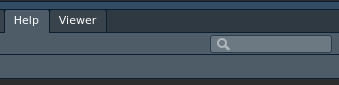

These tutorials will review information about R content for each class meeting and provide exercises for you to practice coding and demonstrate your knowledge.
The tutorials are set to require completion of an exercise before continuing to the next exercise. Also, if you want to clear your answers and start over, click the Start Over link below the topic menu to the left.
The last exercise for each tutorial will provide the text that you need to submit to Canvas to get credit for completing the exercises. So don’t forget to copy that text over to Canvas each time.
If you find any typos or bugs, submit them as issues at the GitHub repo. If you have other questions or suggestions, please email Jeff through Canvas.
I hope you enjoy your first tutorial!
Installing packages from CRAN is super easy with RStudio, but it is helpful to know how to do it from the R console.
Installing from sources other than CRAN can be a little bit trickier. It is common, for example, for packages to be published on GitHub before they are available on CRAN. The {devtools} package has a install_github() function that easily installs packages from GitHub with just the user name and package name.
Though you can load packages through RStudio, you should know how to do it with a function, so you can include this in scripts.
You will often need help when using R. Don’t worry, we all do. R users are expert googlers! You’ll get plenty of practice looking for help throughout your R journey, so let’s figure out how to do it.
We’ll start with cases where you know the function you want to find out about. Maybe you don’t remember which arguments to include or what the function outputs or just how to use it. You can either type ?function or enter the function in the search box in the Help pane.

Let’s get some information about the here() function.
This was a little bit of a trick question. If you typed ?here, this is correct, but if you type that into your R console now, you will likely get an error.
No documentation for ‘here’ in specified packages and libraries:
you could try ‘??here’Remember, ? only works for packages that are loaded. If you know which package the function is in, you should prepend the package name (e.g., ?here::here). Otherwise, it is usually safer to use ?? or or use the RStudio search bar. Also remember that you can’t bring up documentation for functions in packages that you don’t have installed on your computer.
Most help documentation has a standard set of sections, including a description, a list of function argument usage and defaults, definitions of function arguments, extra details, returned output (Value), related functions (See Also), and examples.
For extensive documentation, you can use the Find in Topic bar to search for text within the documentation.
Find and read the documentation for the t.test function and answer the following questions.
If you’re interested in looking at the functions with a package, you can search for the package, too.
?package. This usually includes the URL to the package’s website and/or GitHub page. This functionality is not available for all packages.??package or click on the Index link at the bottom of the package overview page or any function documentation page.If you have not already, install and load the {devtools} package. Then type ?devtools and explore the package information.
Sometimes, you know the function that you need, and you (think you) are using the function correctly, but the code generates an error or doesn’t work as expected. Of course, the first thing to do is google the error message or a general description of the problem. I find that >98% of the time, that generates a solution to the problem (though it might take multiple rounds of search terms or crawling down rabbit holes of recursive help pages before landing on the solution).
But for that <2% of the time, the information is just not available. Now you may need to post a question on a forum (e.g., RStudio Community or Stack Overflow) or even submit a bug report to a package’s GitHub repository. Keep in mind, these options should be last resorts after you’ve scoured the internet (and asked me!). Code developers are busy people, and personally I want them developing amazing new tools rather than answering questions that have already been answered in documentation or help forums.
Before you post something on a forum, you should learn how to ask a good question. This involves writing an informative title, including relevant tags, and describing the problem, the expected behavior, and the actual behavior. But a critical piece of asking for help is including a reproducible example—that is, a minimal amount of code that someone else can use to reproduce the problem. This is such an important component of getting help that…of course…there’s a package for that: {reprex}.
Step one of creating a reproducible example is to create the code that you want to post that demonstrates the problem with the least amount of code that you can make public. This means that you cannot post your data or the entire workflow getting to this part of your data analysis. Probably the best option here is to use an example data set loaded to base R (e.g., mtcars) or a data set included in a commonly used package (e.g., {palmerpenguins}). To see the data sets included in base R, type data(). Alternatively, you can type a small data frame into your example.
Go ahead and install and load the {palmerpenguins} package on your computer in RStudio, as we’ll use it here and in future sessions.
install.packages("palmerpenguins")
library("palmerpenguins")Now that you have an available data set, you need to write the smallest chunk of code that generates the problem. Once you have that, you’re ready to evaluate your code. Now, you need to install and load the {reprex} package in RStudio.
install.packages("reprex")
library("reprex")The {reprex} packages basically spins up a new R session, runs your code in it, and returns the output from that code. So the first thing that you need to do in your reproducible example is load any packages that are required for the code to run (because, remember, the people testing your code don’t necessarily have the packages loaded already). If you forget to include the packages, you’ll see this very quickly when you run reprex(). Next, you need to make sure that the data are available.
Once you have your code ready, copy it to the clipboard, and run reprex() from the R console. This will run the copied code in a new R session. Then it will post the output to the Viewer pane in RStudio and copy it to the clipboard so you can paste it into your forum form or text document.
OK, let’s try it! Let’s assume that for our reprex, we just want to show the first three rows of the penguins data set using the head() function. After you’ve installed and loaded {reprex}, copy the following code and then type reprex() in the RStudio R console.
head(penguins, 3)After you run the code, click Continue to see what went wrong.
OK, I set you up to fail there. You likely received an error. Here’s what happened, if you received one of the following errors.
If you received Error in reprex() : could not find function "reprex" in the R console, this means either you did not install or load the {reprex} package. Please install and load the package.
If reprex() worked properly, you should have had this output in the Viewer tab:
head(penguins, 3)
#> Error in head(penguins, 3): object 'penguins' not foundCreated on 2021-03-05 by the reprex package (v1.0.0)
This is the expected behavior.
Remember, we need to include all packages that are required to run the reprex. Now copy the following text and run reprex().
library("palmerpenguins")
head(penguins, 3)You should have generated the following:
library("palmerpenguins")
head(penguins, 3)
#> # A tibble: 3 x 8
#> species island bill_length_mm bill_depth_mm flipper_length_… body_mass_g sex
#> <fct> <fct> <dbl> <dbl> <int> <int> <fct>
#> 1 Adelie Torge… 39.1 18.7 181 3750 male
#> 2 Adelie Torge… 39.5 17.4 186 3800 fema…
#> 3 Adelie Torge… 40.3 18 195 3250 fema…
#> # … with 1 more variable: year <int>Created on 2021-03-05 by the reprex package (v1.0.0)
Congratulations, you just created your first reproducible example! Not only is this important for posting questions to forums, but I would like you to run reprex() before sending questions to me, too.
Spend some time exploring the RStudio menus and panels. While you can customize the positions of the panels, using the standard configuration will make it easier for other people (read: me) to understand what you are doing if you ask for help.
Here is a list the tabs that you’ll be using most often. Make sure you are familiar with them.
Using keyboard shortcuts will greatly simplify your RStudio workflow and allow you to work more quickly. There are dozens of keyboard shortcuts in RStudio. You can find them by going to the menu bar Tools > Keyboard Shortcuts Help. Explore the keyboard shortcuts and answer the following questions:
Congratulations, you finished your first tutorial! Again, if you found any typos or bugs, submit an issue, and email Jeff with questions and suggestions.